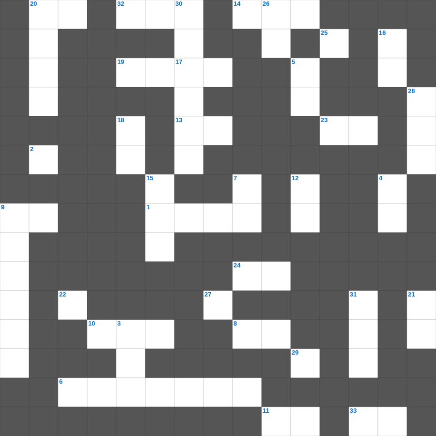

디도서 마스터 100
📌 서비스 정의
십자가로세로는 교회 주보와 주일학교에서 사용할 수 있는 성경 기반 가로세로 퍼즐 서비스입니다. 성경 인물, 사건, 핵심 구절을 바탕으로 제작되었습니다. 온라인 풀이 및 인쇄 기능을 제공합니다.
📖 디도서란?
디도서는 바울이 그레데 섬의 교회를 책임진 디도에게, 건전한 교리와 선한 행실로 교회를 세우도록 권면하는 목회 서신입니다.
📚 디도서의 주요 사건·주제
장로의 자격에 대한 가르침 · 거짓 교사들에 대한 경고 · 각 계층을 향한 실천적 권면 · 은혜와 선한 일에 대한 가르침 · 선한 일에 힘쓸 것에 대한 권면
오늘은 디도서의 주요 내용을 담은 디도서 주일학교 퀴즈를 준비했습니다. 총 35개의 힌트가 있으며, 주일학교 교재나 성경공부 자료로 활용하기 좋습니다. 무료로 즐기는 디도서 가로세로 퍼즐을 지금 바로 풀어보세요!

📝 가로 힌트
1. 다윗이 사울을 피해 도망쳐 숨은 굴
2. 요한일서 2장 29절: 의를 행하는 자마다 누구에게서 난 줄을 아나
6. 지혜로운 자는 두려워하여 악을 떠나나 미련한 자는 방자하여 이것 하느니라
8. 자녀들아 너희는 하나님께 속하였고 또 그들을 이기었나니 이는 너희 안에 계신 이가 세상에 있는 자보다 이것이라
9. 이스라엘이 어렸을 때에 내가 사랑하여 내 아들을 이것에서 불러냈거늘
10. 바울이 마게도냐로 갈 때 디모데를 이곳에 머물게 함
11. 일의 이것을 다 들었으니 하나님을 경외하고 그의 명령들을 지킬지어다
13. 이 여러 왕들의 시대에 하늘의 하나님이 한 이것을 세우시리니 이것은 영원히 망하지도 아니할 것이요
14. 요한의 형제, 세베대의 아들, 첫 순교 사도
19. 예수께서 제자들과 함께 이곳이라 하는 곳에 이르러 기도하기를 시작하시니
20. 이 세상이나 세상에 있는 것들을 이것하지 말라
22. 공중의 이것이 그 소리를 전하고 날짐승이 그 일을 전파할 것임이니라
23. 너희가 어떠한 사람이 되어야 마땅하냐 거룩한 행실과 이것으로
24. 에돔에 대하여 이르시되 데만에 다시는 이것이 없느냐
25. 지혜로운 여인은 자기 집을 세우되 미련한 여인은 자기 이것으로 그것을 허느니라
29. 드고아의 귀족들이 하지 않은 일 '공사에 이것을 메지 않음'
32. 이스라엘의 첫 번째 사사 (갈렙의 사위)
33. 하늘에서 불 섞여 내린 일곱 번째 재앙
📝 세로 힌트
3. 오순절 설교를 통해 유대인들에게 회개를 촉구한 사도
4. 성전 물이 닿지 않아 소금 땅이 되는 곳
5. 예수님이 다시 오시는 일
7. 사람의 마음은 이것에 비추어 알 수 있느니라
9. 이스라엘이 의지했던 강대국 두 곳
12. 사람아 주께서 선한 것이 무엇임을 네게 보이셨나니 여호와께서 네게 구하시는 것은 오직 이것을 행하며
15. 너희가 나가서 외양간에서 나온 이것 같이 뛰리라
16. 삼 일 동안 앞을 볼 수 없었던 아홉 번째 재앙
17. 주를 사랑하지 아니하는 자는 저주를 받을지어다 우리 주여 오시옵소서 (이 고백의 칭호)
18. 또한 나의 동역자 마가, 아리스다고, 데마, 이것가 문안하느니라
20. 룻기의 배경이 되는 시대
21. 자는 자들에 관하여... 소망 없는 다른 이와 같이 이것하지 않게 하려 함이라
26. 스바냐가 경고한 '여호와의 날'의 특징 (분노, 환난, 이것의 날)
27. 명철한 사람의 입의 말은 깊은 물과 같고 지혜의 샘은 솟구쳐 흐르는 이것과 같으니라
28. 너는 가서 기쁨으로 네 이것을 먹고 즐거운 마음으로 네 포도주를 마실지어다
30. 바울의 1차 선교 여행 중 구브로에서 총독을 믿게 하려다 눈이 멀게 된 마술사
31. 도마가 부활하신 예수를 보고 한 고백: 나의 주님이시요 나의 이것이시니이다
🧩 이 퍼즐에서 배우는 내용
이 퍼즐은 디도서 마스터 100의 핵심 단어와 개념을 자연스럽게 복습할 수 있도록 구성되었습니다. 주일학교 수업이나 개인 성경공부에서 학습 내용을 점검하는 용도로 바로 활용할 수 있습니다.
🧑🏫 교회 교육 자료 활용
이 퍼즐은 주일학교 교재 추천 자료로 활용할 수 있고, 주일학교 주보에 넣기 좋은 분량으로 구성되어 있습니다. 수업용 주일학교 교안에 활동지로 붙이거나, 예배 후 복습용 주일학교 공과교재로 바로 사용할 수 있습니다.
🏷️ 키워드
디도서 주일학교 퀴즈, 디도서, 십자가로세로, 성경퀴즈, 말씀퀴즈, 가로세로퍼즐, 주일학교 교재 추천, 주일학교 주보, 주일학교 교안, 주일학교 공과교재